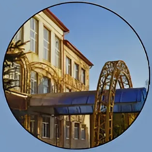
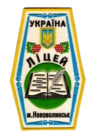

Нововолинський науковий ліцей Волинської обласної ради
ОГОЛОШУЄ НАБІР УЧНІВ ДО КЛАСІВ:
Поглиблене вивчення:
8 клас:
- іноземні мови
- українська мова
- математика
9 клас:
- іноземні мови
- українська мова
- хімія
- математика
Профільне навчання:
10 клас:
- суспільно-гуманітарний (іноземні мови, українська мова)
- природнио-математичний(хімія, біологія)
- природничо-математичний ( математика, фізика)
- суспільно-гуманітарний (історія, українська мова, українська література)
Нововолинський науковий ліцей Волинської обласної ради оголошує набір учнів на 2024-2025 н.р.в класи перелічені вище. Нововолинський науковий ліцей забезпечить вам високоякісну освіту, усебічний розвиток, участь в олімпіадах, конкурсах, турнірах, співпрацю з провідними науковцями України, цікаве дозвілля, підтримку та сприяння в усіх починаннях.
Усім передбачено безкоштовне харчування , дітям, які проживають в інших населених пунктах, -безкоштовне проживання в гуртожитку.
